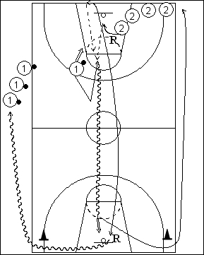

Catégorie : FASTBREAK (Fb-002)
Déroulement
- Deux files. Les joueurs de la file 1 possèdent un ballon.
- Le premier joueur de cette file prend un shoot, se démarque vers le centre du terrain et vient appeler la première passe dans le demi-cercle des lancers-francs. Pendant ce temps, le premier joueur de la file 2 effectue le rebond et réalise la première passe à 1 (avec remise en jeu de la baseline si le shoot de 1 a été réussi). 1 va en lay-up du côté opposé en un minimum de dribbles. 2 accompagne comme trailer. Il reshoote si la tentative de 1 a échoué.
- Rebond de 2 qui va dans la file 1. 1 va en 2.
Coaching points
- Travailler toutes les séquences de la contre-attaque, à savoir : la qualité du rebond défensif de 2, sa vitesse de réaction pour effectuer la première passe (après sortie à la baseline si le shoot a été réussi), la vitesse du dribble de fastbreak de 1 et la qualité de son lay-up, la vitesse du trailer.
- On peut ajouter un cône, puis un défenseur statique, puis un défenseur actif dans la raquette opposée pour obliger 1 à jouer son un contre un.